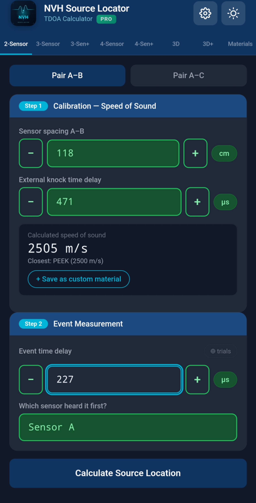

Tri akcelerometra, jedan događaj, tri vremena dolaska. 27 sekundi.
NVH Source Locator je mjerni alat za lociranje izvora buke i vibracija pomoću TDOA (Time Difference of Arrival) iz signala akcelerometra zabilježenih na osciloskopu ili mjernom sustavu.
Ovaj priručnik pokriva sve značajke. Za kratki podsjetnik pogledajte Kratki priručnik.
Kad izvor buke emitira zvuk ili vibraciju, val putuje kroz materijal poznatom brzinom. Ako postavite dva ili više akcelerometara na materijal i izmjerite kada val stigne do svakog od njih, vremenska razlika vam govori gdje je izvor.
NVH Source Locator uzima:
Zatim izračunava gdje se izvor nalazi u strukturi.
Što više senzora koristite, to preciznije možete locirati izvor:
Trebat će vam:
Aplikacija ima kartice na vrhu:

| Kartica | Što radi | Kada koristiti |
|---|---|---|
| 2-Sensor | 1D lociranje izvora duž linije između 2 senzora | Brze provjere, strukture nalik gredama. Potpuno besplatno. |
| 3-Sensor | 2D lociranje izvora pomoću 3 senzora u trokutu | Najopćenitija upotreba, ploče i površine |
| 3-Sen+ | 3-Sensor s preodređenim rješavačem najmanjih kvadrata | Zahtjevnija mjerenja, otporno na buku |
| 4-Sensor | 2D lociranje pomoću dva para (A-B + C-D) | Pravokutni rasporedi senzora, unakrsna provjera |
| 4-Sen+ | Napredni 2D način, 4 senzora u bilo kojem položaju | Nepravokutne geometrije, puni LSQ |
| 3D | 3D lociranje izvora pomoću 4 senzora s XYZ koordinatama | Složene strukture u 3D prostoru |
| 3D+ | 3D s do 6 senzora, preodređeni LSQ | Vrlo složene geometrije, maksimalna preciznost |
| Materials | Knjižnica brzine zvuka + prilagođeni materijali | Odaberite jednom po sesiji mjerenja |
| Help | Tutorijali u aplikaciji i referenca | Kada vam treba brzi podsjetnik |
Besplatno vs Pro: Kartica 2-Sensor je potpuno besplatna. Druge kartice su dostupne, ali imaju određena polja za unos zaključana za Pro korisnike (označena zlatnom značkom lokota). Dodir zaključanog polja prikazuje Pro paywall.
Postavke su dostupne putem ikone zupčanika ⚙ u gornjem desnom kutu (nije kartica).
Najjednostavnije mjerenje: lociranje izvora duž linije između dva akcelerometra.

Dodirnite karticu Materials. Odaberite materijal od kojeg je vaša struktura napravljena (npr. „Aluminij", „Čelik, Mild (1020)"). Aplikacija koristi poznatu brzinu zvuka materijala za automatsko popunjavanje polja vremena kalibracije.
Ako materijal vaše strukture nije na popisu, možete privremeno odabrati „Zrak" i ručno prepisati vrijeme kalibracije u koraku 2.
Na kartici 2-Sensor vidjet ćete dvije sekcije parova: Par A–B i Par A–C (potreban je samo A–B ako imate samo 2 senzora).
Za svaki par popunjavate:
d): fizička udaljenost između senzora, u cm ili inčima (postavljeno u Postavkama)tCal): vrijeme potrebno valu da putuje između senzora pri brzini zvuka materijala — automatski popunjeno kada odaberete materijal, ali možete prepisatitEvent): vremenska razlika između senzora koji detektiraju događaj buke, u mikrosekundamaAplikacija prikazuje položaj izvora kao udaljenost od senzora A: - Rezultat = 0: izvor je kod senzora A - Rezultat = udaljenost: izvor je kod senzora B - Rezultat između: izvor je između njih - Rezultat izvana: izvor je iza jednog od senzora (toast će upozoriti)
Kartica rezultata prikazuje obje udaljenosti (od A, od B) i pokazuje koji senzor je bliži.
Dodirnite 📷 Označi fotografiju kako biste fotografirali svoju postavku. Aplikacija postavlja oznake za senzore A, B i izvor. Korisno za izvješća.
Locira izvor na 2D ravnini koristeći tri senzora raspoređena u trokut.

Postavite tri senzora na svoju strukturu tvoreći trokut. Jednakostranični, pravokutni ili raznostranični — aplikacija obrađuje sve geometrije.
U sekciji Duljine stranica trokuta unesite fizičku udaljenost za sve tri stranice (A–B, A–C, B–C).
Za svaki par (A–B i A–C) unesite: - tCal: vrijeme kalibracije (automatski se popunjava iz materijala) - tEvent: izmjerena vremenska razlika za događaj buke - Prvi senzor: koji je prvi čuo
Aplikacija prikazuje položaj izvora kao koordinate X, Y u odnosu na senzor A (senzor A u ishodištu, senzor B na X osi). Vizualizacija prikazuje sva tri senzora i lokaciju izvora.

Nekoliko naprednih kartica nudi preodređene rješavače i veću dimenzionalnost:
Ista postavka trokuta kao 3-Sensor, ali kalibrirajte I mjerite sva tri para (A–B, A–C, B–C). Rješavač koristi sva 3 TDOA u prilagodbi najmanjih kvadrata — robustnije na mjernu buku i anizotropne materijale. Reziduali po paru se prijavljuju kako biste mogli uočiti nedosljedna mjerenja.
Postavite četiri senzora oko područja: - A–B = horizontalni par (lijeve/desne strane) - C–D = vertikalni par (gornja/donja strane)
Najprije pokrenite par A–B (horizontalni), zatim par C–D (vertikalni). 2D karta prikazuje sjecište. Svaki par se kalibrira odvojeno — korisno kada materijal varira preko strukture.
Četiri senzora u bilo kojem položaju (nije forsirana pravokutnost). Uparite A sa svakim od B, C, D i kalibrirajte odvojeno. Preodređeni rješavač najmanjih kvadrata uprosječuje mjernu buku po paru i prijavljuje rezidualne vrijednosti po paru.
Potpuno 3D mjerenje s 4 senzora smještena u 3D prostoru. Unesite koordinate (X, Y, Z) svakog senzora, plus vremena kalibracije i događaja za svaki par (A–B, A–C, A–D).
Kao 3D, ali podržava do 6 senzora (A do F) s preodređenim LSQ. Maksimalna preciznost za složene 3D geometrije.
Knjižnica uobičajenih inženjerskih materijala s poznatom brzinom zvuka na 20 °C.

Popis uključuje zrak, tekućine, gume, polimere, drvo, stakla i metale. Brzine se kreću od ~340 m/s (zrak) do ~13 000 m/s (neki metali na sobnoj temperaturi).
14 često korištenih metala uključuje podatke o temperaturnom koeficijentu. Kada se Referentna temperatura u Postavkama razlikuje od 20 °C, aplikacija automatski prilagođava brzine ovih materijala:
Materijali s kompenzacijom prikazuju dvije vrijednosti u izborniku: kompenziranu brzinu (velika, istaknuta) i referentnu brzinu na 20 °C (mala, siva ispod).
Materijali bez kompenzacije prikazuju „ref only" kurzivom — njihova navedena brzina koristi se onakva kakva je, bez obzira na temperaturu.
Ako izmjerite kalibraciju na kartici 2-Sensor, možete spremiti rezultat kao prilagođeni materijal. Nakon uspješnog 2-sensor mjerenja, potražite opciju spremanja izvedene brzine pod imenom po vašem izboru.
Prilagođeni materijali pohranjuju in-situ izmjerenu brzinu; nikada ne primjenjuju temperaturnu kompenzaciju (brzina je već izmjerena pri temperaturi testa).
Dodirnite zvjezdicu uz bilo koji materijal kako biste ga označili kao favorit. Favoriti se pojavljuju na vrhu popisa za brzi pristup.
Koristite traku za pretraživanje na vrhu za filtriranje materijala prema imenu. Pretraga odgovara i engleskim kanonskim imenima i prevedenim prikaznim imenima.
Brzina zvuka u materijalima mijenja se s temperaturom. U automobilskom NVH testiranju to je važno: prostor motora na 80 °C, hlađena kabina na -10 °C ili područje ispušne grane na 200 °C svi se ponašaju drugačije od laboratorijskih uvjeta na sobnoj temperaturi.
Otvorite Postavke (ikona ⚙) → Referentna temperatura. Unesite temperaturu svog testnog okruženja u °C (raspon -40 do +200).

Referentna temperatura uvijek se resetira na 20 °C kada pokrenete aplikaciju. To sprječava da zastarjele postavke iz prošle sesije mjerenja tiho utječu na današnji rad. Mala kurzivna napomena u Postavkama vas podsjeća na ovo ponašanje.
Ako želite reproducirati povijesno mjerenje na njegovoj originalnoj temperaturi, samo dodirnite unos — temperatura se automatski vraća.
Većina nemetalnih materijala nema pouzdane objavljene temperaturne koeficijente. Aplikacija za njih prikazuje značku „ref only" — njihova navedena brzina koristi se bez obzira na postavku temperature. Ako trebate točna mjerenja na ne-sobnim temperaturama za ove materijale, izvršite in-situ kalibraciju i spremite rezultat kao prilagođeni materijal.
Nakon uspješnog izračuna, dodirnite gumb 📷 Označi fotografiju kako biste postavili oznake senzora i izvora na fotografiju svoje postavke.

Označena fotografija automatski se uključuje u PDF izvješća.
Dodirnite gumb Ispiši rezultat na bilo kojem zaslonu rezultata za generiranje formatiranog izvješća.

Postavke → Zaglavlje izvješća. Unesite ime svoje tvrtke, ime laboratorija, podatke projekta ili bilo što što želite na vrhu svakog izvješća.
Spremite sve svoje prilagođene materijale, favorite, postavke i povijest u jednu datoteku. Prijenos između uređaja.
Postavke → Sigurnosna kopija → dodirnite „Spremi datoteku sigurnosne kopije". Aplikacija generira JSON datoteku i otvara list za dijeljenje na vašem telefonu. Spremite je u svoj oblačni pogon (Google Drive, iCloud, OneDrive), pošaljite e-poštom sebi ili prenesite na bilo koji način.
Postavke → Vraćanje → odaberite datoteku sigurnosne kopije iz pohrane vašeg telefona. Aplikacija uvozi prilagođene materijale, favorite, povijest i postavke.
⚠️ Vraćanje zamjenjuje vaše trenutne podatke. Ako imate važna mjerenja na trenutnom uređaju, prvo ih sigurnosno kopirajte prije vraćanja iz druge sigurnosne kopije.
Pristup putem ikone zupčanika ⚙ u gornjem desnom kutu. Postavke su modalni prozor, nisu kartica.
| Postavka | Što kontrolira |
|---|---|
| Nadogradnja na Pro | Kupite ili saznajte više o Pro značajkama ($19,99) |
| Jezik | Jezik prikaza aplikacije (podržano 30) |
| Tema | Svjetla, Tamna ili Auto (slijedi sustav) |
| Mjerna jedinica udaljenosti | cm ili inči |
| Referentna temperatura | Aktivna temperatura za kompenzaciju, -40 do +200 °C |
| Zaglavlje izvješća | Prilagođeni tekst na vrhu generiranih izvješća |
| Sigurnosna kopija | Izvoz svih podataka u datoteku |
| Vraćanje | Uvoz podataka iz datoteke sigurnosne kopije |
| Vrati kupnju | Ponovno preuzmite Pro na novom uređaju |
NVH Source Locator koristi freemium model s zaključanim značajkama:
Polja koja zahtijevaju Pro raspoređena su u: - 3-Sensor, 3-Sen+, 4-Sensor, 4-Sen+ - 3D i 3D+ načine - Sigurnosnu kopiju i Vraćanje - PDF izvješća - Prilagođene materijale - Označavanje fotografije
Besplatni korisnik može OTVORITI bilo koju karticu i VIDJETI sučelje. Jednostavno ne može unijeti vrijednosti u Pro-zaključana polja za unos.


Kada besplatni korisnik dodirne zaključano polje, paywall klizi prikazujući: - Ikonu aplikacije s PRO značkom - Popis značajki - Gumb za otključavanje s cijenom ($19,99 zadano; može varirati po regiji) - Iskorištavanje promo koda (samo Android — iOS koristi Appleov zasebni proces Offer Code) - Neobavezni promotivni link za kanale zajednice
Dodirnite bilo koje zaključano polje ili dodirnite Nadogradnja na Pro u Postavkama. Koristi službeni sustav plaćanja vaše platforme (Google Play na Androidu, Apple App Store na iOS).
Ako ste kupili na jednom uređaju i želite Pro na drugom (isti račun):
Ako iskoristite promo kod u Google Play Storeu ili App Storeu dok NVH Source Locator radi u pozadini, povratak u aplikaciju automatski detektira novu kupnju i otključava Pro — nije potrebno ručno Vraćanje.
Android: gumb „Imate Google Play promo kod?" u paywallu otvara Google Play proces iskorištavanja s vašim unaprijed popunjenim kodom.
iOS: Politika App Storea 3.1.1 zahtijeva iskorištavanje putem Appleovog službenog procesa „Iskoristi kod". Gumb Google Play sakriven je na iOS-u. Umjesto toga potražite „Iskoristi kod App Storea" u Postavkama.
Kartica Help uključuje tutorijale u aplikaciji, vodiče najboljih praksi i referentne informacije.

Pokrivene teme: - Koju opremu trebate - Kako postaviti senzore za najbolju točnost - Savjeti za kalibraciju - Uobičajeni scenariji mjerenja - Savjeti za triangulaciju i 3D postavljanja - Vođenje kabela i kvaliteta signala
tCal pretpostavlja objavljenu brzinu materijala — stvarni materijali variraju. Najtočnija kalibracija je in-situ: dodirnite poznatu lokaciju i pustite aplikaciju da izvuče stvarnu brzinu.Matematika kaže da izvor nije između vaših senzora. Mogući uzroci: - Izvor je zapravo izvan linije/ravnine senzora - Jedan od vaših ulaza je pogrešan - Brzina kalibracije previše je daleko od stvarnosti
Implicirana brzina zvuka iz vaših ulaza daleko je od bilo kojeg uobičajenog materijala (manje od 50 m/s ili više od 20 000 m/s). Provjerite svoje ulaze — vjerojatno tipfeler u tCal ili udaljenosti.
Provjerite Referentnu temperaturu u Postavkama. Ako nije 20 °C, prikazane brzine odražavaju temperaturnu kompenzaciju. Aplikacija prikazuje „ref X @ 20°C" ispod kompenziranih brzina kako biste mogli provjeriti.
Stari unosi povijesti stvoreni prije verzije aplikacije 1.75 možda nisu pohranili temperaturu. Ako ste izvršili mjerenje na ne-20 °C temperaturi, reprodukcija će koristiti trenutnu postavku. Ručno postavite temperaturu u Postavkama prije reprodukcije, ILI ponovno mjerite.
Oznake se automatski postavljaju na temelju ulazne geometrije. Povucite ih za prilagodbu. Prilagodba oznaka ažurira položaj izvora u sloju fotografije — ali NE mijenja temeljni rezultat izračuna.
Provjerite koristite li datoteku sigurnosne kopije generiranu istom ili novijom verzijom aplikacije. Stariji backup datoteke možda nemaju trenutna polja podataka.
Po dizajnu: kada izađete iz numeričkog polja (dodirnete drugdje), ako je prazno, negativno ili sadrži ne-numerički tekst, postavlja se na 0. Sprječava tiho slomljene izračune iz slučajno obrisanih unosa. Unos temperature je izuzet (umjesto toga ograničava se na -40/+200).
Kontaktirajte support@evdiag.net s:
- Modelom uređaja i verzijom OS-a
- Verzijom aplikacije (Postavke → dno stranice)
- Opisom onoga što ste pokušali
- Snimkama zaslona ako je moguće
NVH Source Locator razvija EVDiag. Posjetite https://evdiag.net za ažuriranja i resurse.